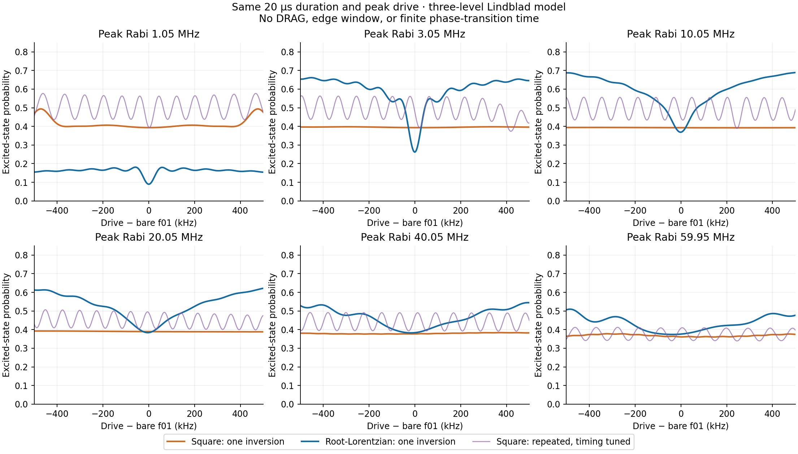
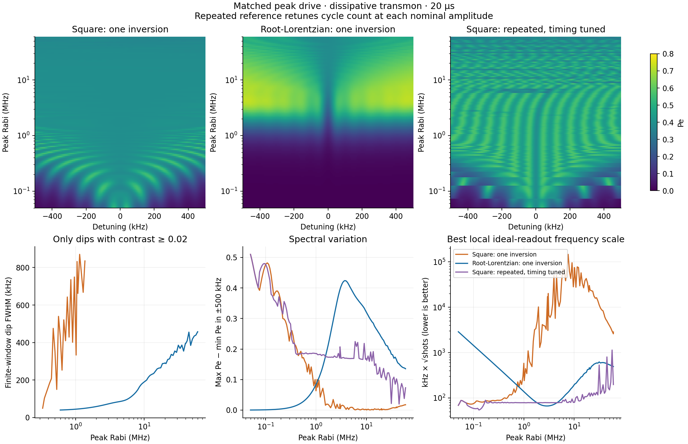
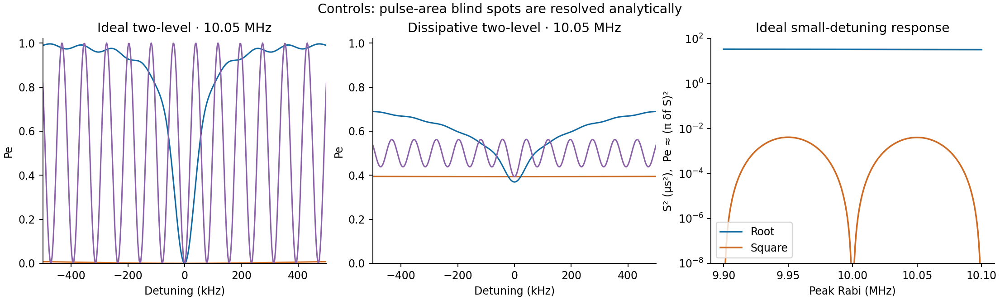
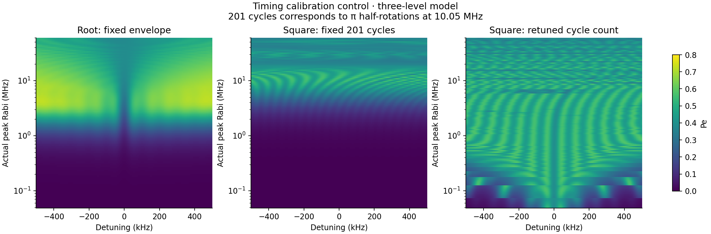
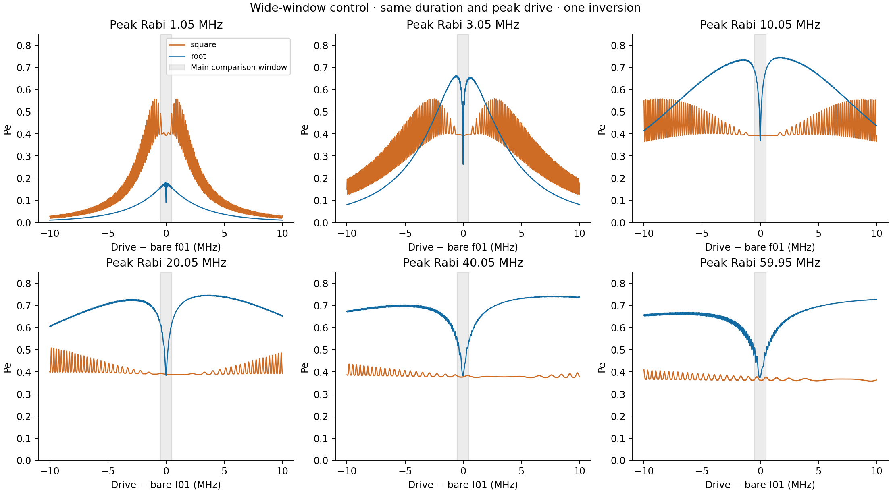

At matched duration and peak drive, the root-Lorentzian provides a pronounced near-resonant dip over a broad drive range where a single square echo becomes nearly flat. This supports an advantage for locating the resonance without pulse-area tuning. It does not establish universally superior frequency sensitivity.
Both primary pulses last 20 μs and have one abrupt midpoint π phase inversion. The root envelope is 1/√(1+(t/τ)²), τ=0.05000063 μs, cutoff 0.005, order 1/2. No DRAG, edge window, finite sign-transition time, or Stark compensation is applied. The 132 matched peak drives span 0.05–60 MHz. The primary grid is ±0.5 MHz with 2.5 kHz spacing.
The three-level Duffing/Lindblad model uses anharmonicity −216 MHz, T1=43.8 μs, and a phenomenological Markovian T2=7.6 μs (Tφ=8.3220 μs). These are explicit comparison parameters, not a new fit or a measurement. Ideal and dissipative two-level controls are saved too.

| Peak Rabi MHz | Root FWHM kHz | Root center kHz | Root dip depth | Root max−min Pe | Square max−min Pe |
|---|---|---|---|---|---|
| 1.05 | 45.3 | 0.11 | 0.069 | 0.0914 | 0.1003 |
| 3.05 | 73.5 | -0.29 | 0.389 | 0.3993 | 0.0048 |
| 10.05 | 190.9 | -1.38 | 0.310 | 0.3200 | 0.0020 |
| 20.05 | 290.9 | -4.45 | 0.225 | 0.2380 | 0.0045 |
| 40.05 | 394.3 | -17.12 | 0.144 | 0.1623 | 0.0077 |
| 59.95 | 458.2 | -37.73 | 0.109 | 0.1358 | 0.0179 |
At 3.05 MHz, the root dip is approximately 74 kHz wide and its center is within 0.3 kHz of bare f01. The total signal variation in ±500 kHz is 0.399, versus 0.0048 for the single square echo (about 83× larger). At 10.05 MHz the root dip is about 191 kHz wide and its variation is about 160× larger. At 1.05 MHz, both have similar total variation, but the root dip is approximately 18× narrower than the square dip under the stated finite-window definition.
The root pulse is not amplitude-independent: its width grows, contrast falls, and center moves at large drive. At 59.95 MHz its center displacement is about −38 kHz and the finite-window width is about 458 kHz. At small peak drive (below roughly 1 MHz here), the root receives too little pulse area and can be less useful than the square. The useful operating range depends on cutoff, duration, and coherence.
Widths and dip depths use the repository's finite-window definition: raw minimum within ±250 kHz, a linear background fitted outside ±400 kHz, and nearest half-depth crossings. A plotted “visible” width additionally requires depth ≥0.02 and at least six grid intervals. These are not universal Lorentzian-fit linewidths. Max−min Pe is a separate, unambiguous signal-variation measure over ±500 kHz, not a sensitivity or information gain.

Both unitary single echoes cancel exactly on resonance. Their difference is
the response to detuning. For a square echo,
Pe = 4 Δ² Ω²/(Δ²+Ω²)² · sin⁴[T√(Δ²+Ω²)/4].
Its small-detuning response oscillates with pulse area and can vanish.
The root envelope replaces this strongly oscillating response with a much
smoother drive dependence. Integer MHz drives at 20 μs happen to be ideal-square
blind spots. The displayed slices instead use odd half-rotation multiples of π,
which maximize the square echo's ideal small-detuning curvature. The benefit
therefore does not come from choosing its coherent blind spots.

The extra purple reference is a repeated square rotary echo. It has N=max(1, floor(fR T+0.5)) complete cycles, each containing equal positive and negative segments. This preserves duration and peak drive but retunes the cycle count at every nominal amplitude. At the displayed amplitudes, each half-rotation is exactly π. It can provide steeper local fringes and better local ideal-readout sensitivity than the root pulse; the root's simpler central dip and amplitude range are different advantages. Repeated high-drive curves are a three-level illustration, not converged performance predictions.
The local information metric is max[(dPe/df)²/(Pe(1−Pe))], excluding two endpoint samples and probabilities within 10⁻⁴ of 0 or 1. Its inverse square root is the plotted kHz × √shots scale. It assumes known amplitude and an already located operating point with perfect binary Pe readout. Unknown-amplitude nuisance parameters, readout errors, reset overhead, drift, and the cost of finding the appropriate fringe are excluded. No experimental sensitivity gain is claimed.

The fixed-201-cycle control holds its timing while amplitude varies; its π half-rotation calibration is at 10.05 MHz. This distinguishes waveform robustness from a comparator retuned separately for every drive. All maps sample a discrete amplitude grid; analytical curvature, rather than that coarse grid, resolves the single square echo's rapid pulse-area oscillations.

The ±10 MHz control shows the broad structure and fringes of the square echo outside the main near-resonance window. The square response is not globally flat. At equal peak drive, the ratio of integrated Ω² is 0.007829: the root uses 0.783% of the square's drive-energy proxy. Matching peak amplitude therefore does not match energy, RMS drive, or pulse area. An additional equal-energy square control, with peak amplitude multiplied by 0.088482, is saved in equal_energy_control.npz.
Exact matrix exponentials propagate all square segments. The unitary square formula agrees to 3.7e-13 in Pe. Halving the root RK4 step from 0.5 to 0.25 ns changes any tested population by at most 2.4e-05. Halving the detuning spacing changes tested root widths by at most 165 Hz and local Fisher information by 0.57%. A separate segment-exponential root calculation resolves the envelope in asinh(t/τ); its final four-level refinement changes populations by 3.7e-05.
At tested detunings −500, −100, 0, 100, and 500 kHz, adding a fourth level changes root Pe by at most 3.0×10⁻⁵ up to 20.05 MHz and 0.00111 at 59.95 MHz. The square reference has stronger high-drive truncation effects: the single square 3→4-level change reaches 0.0129, and the repeated echo reaches 0.116; its 4→5-level change can still reach 0.0324. The central comparison through 20 MHz is much more reliable for the single square than high-drive repeated reference predictions. Abrupt phase inversions and Markovian noise are model assumptions; hardware bandwidth and colored noise have not been simulated.
The independent native square check differs from the exact exponential by 0.0021 at its worst tested point. Exact exponentials, not native RK4, supply every square result. An initial uniform-envelope four-level root check was under-resolved; the converged transformed-grid check above supersedes it. See initial validation and converged level checks for all values.
All metrics CSV · Response arrays · Simulation configuration and original source hashes · Postprocessing source and array hashes
Software checks for this change: 30 focused tests passed using the simulation virtual environment; Ruff passed on all three added source/test files. Full-suite collection was blocked by missing optional torch. With that test module excluded, 204 tests passed and one unrelated Figure 3 statistics test failed. Repository-wide lint reported 692 issues outside the added files. See software validation details.
Reproduce from the repository root:
PYTHONPATH=. .venv/bin/python scripts/compare_square_root_echo.py
Use --reuse to regenerate plots and this report from saved main responses.